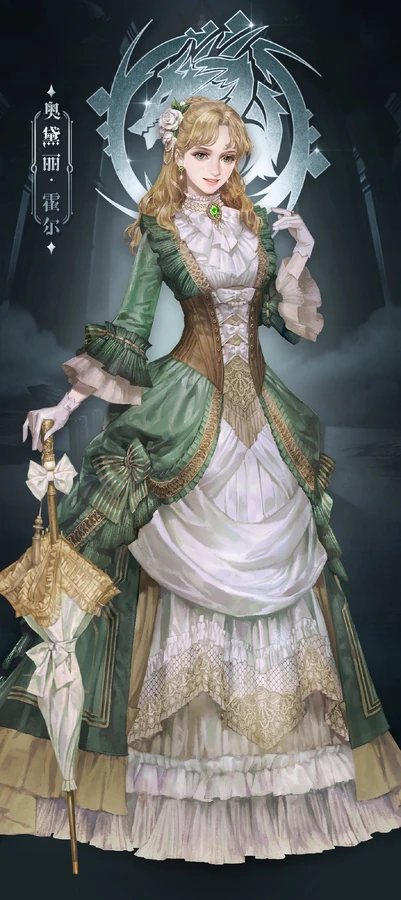

Audrey Hall is a Beyonder of the Spectator. She is one of the first members of the Tarot Club, codenamed Justice, Her companion partner is Susie. She is a believer in the Evernight Goddess and has adopted the idea of equality for all people.
This page includes major-spoiler information from the linked source article. The fact fields below are transcribed from that article’s character infobox.Translations
| Language | Official Translation |
|---|---|
| English | Audrey Hall |
| Chinese | 奥黛丽.霍尔 |
| Korean | 오드리 홀 |
| Thai | ออเดรย์ ฮอลล์ |
Role & affiliations
Aliases and titles
- Justice
- Backlund's Most Dazzling Gem
- Miss Pride
Affiliations
- Tarot Club
- Psychology Alchemists
- Loen Relic Search and Preservation Foundation
Occupation(s)
- An Angel of Church of the Fool
- Founder of the Loen Relic Search and Preservation Foundation
- Shareholder of Backlund Munitions Corporation
- Shareholder of Pritz Commercial Marine Company
- Shareholder of Backlund Bike Company
- Director of Loen Charity Bursary Foundation
- Councilor of the Psychology Alchemists
Religion(s)
- Church of the Fool
- Church of the Evernight Goddess
Pathway & abilities
Pathway: Visionary
Recorded progression: Sequence 3: Dream Weaver (Visionary Pathway)

Quotes20 lines
Complete quote entries transcribed from the character’s dedicated wiki Quotes page. The collection includes available Book One and Book Two entries.
It’s faith towards the Goddess, but for The Fool, it’s worship.
— Audrey Hall, Lord of Mysteries, Chapter 221.
Every “famous detective” needs a good assistant.
— Audrey Hall, about Susie, Lord of Mysteries, Chapter 239.
Father, from what you just said, it sure was a horrible but funny scene. I hope that the eyewitness won’t have nightmares because of it.
— Audrey Hall to Earl Hall, Lord of Mysteries, Chapter 324.
In the future, there will also be an informant from the Tarot Club inside the Psychology Alchemists.
— Audrey Hall to Mr. Fool, Lord of Mysteries, Chapter 341.
Does Mr. Fool wish to get the title of 'The Nemesis of Evil Gods'? Audrey, how can you do this? How can you use Mr. Fool as a joke…
— Audrey Hall, Lord of Mysteries, Chapter 384.
The death of Duke Negan has made me understand that the world isn’t as stable and peaceful as I thought it was. I want to have the power to protect all of you at critical moments…
— Audrey Hall, Lord of Mysteries, Chapter 472.
It has to be said that it’s actually quite terrifying, just like monsters in the legends, who can grasp your minds…
— Audrey Hall, Lord of Mysteries, Chapter 633.
I have to say that Susie’s existence has effectively raised my motivation to learn, as well as how strictly I handle matters… I can’t be inferior to a dog! But, being better than this dog doesn’t seem to be something worthy of praise…
— Audrey Hall, about Susie, Lord of Mysteries, Chapter 789.
Audrey, you were that naive and immature back then! Thankfully, you met Mr. Fool. If it were any other secret existence, you would’ve long gone mad or turned into a monster! Mr. Fool is such a nice man! No, such a nice orthodox god!
— Audrey Hall, Lord of Mysteries, Chapter 805.
The consultation fee that I charge isn’t much at all. Yeah, wish me happiness!
— Audrey Hall to Mr. World, Lord of Mysteries, Chapter 849.
Is the supernatural world always this cruel and terrifying, or is it just occasionally?
— Audrey Hall to Mr. World, Lord of Mysteries, Chapter 1007.
Under the premise of knowing how cruel and terrifying the mysterious world is, the me from last June would’ve given up being a Beyonder. But the me of this year wouldn’t. This might be the price of growing up.
— Audrey Hall, Lord of Mysteries, Chapter 1008.
Mr. Star really is laid-back, and his hair is combed very casually. It’s such a pity. Otherwise, with his looks, he can be a model on the covers of magazines…
— Audrey Hall, Lord of Mysteries, Chapter 1062.
I understand what you mean. There are many times when you can’t do what you want while ensuring absolute safety. You can only choose one of them.
— Audrey Hall to Mr. World, Lord of Mysteries, Chapter 1225.
Ever since I became a Spectator, I’ve always displayed what would be the most acceptable side to them in front of others, taking care of their most delicate emotions. This isn’t a bad thing, but this way, I won’t be able to know what I really look like in the eyes of others. I won’t be able to unveil the gorgeous clothes and see the rotting flesh beneath me. I won’t be able to figure out the problem. Recently, I’ve been trying to show my true state in some details. I want to see how the people around me will react under such a situation. I want to see if they still think that I’m the kind, amiable, and virtuous young lady.
— Audrey Hall to Mr. World, Lord of Mysteries, Chapter 1227.
Our past experiences are both a burden and a source of strength, motivation, and growth.
— Audrey Hall to Lumian Lee, Circle of Inevitability, Chapter 277.
For me, indulging in the manipulation of others’ minds is a treacherous endeavor. Of course, honesty is also an effective way at influencing others’ thoughts.
— Audrey Hall to Lumian Lee, Circle of Inevitability, Chapter 346.
It's not that fate can't be changed. Of course, some entities don't think so.
— Audrey Hall to Anthony Reid, Circle of Inevitability, Chapter 500.
Good afternoon, Mr. Fool
— Audrey Hall, as she opened the Tarot Club's first gathering after Mr. Fool's awakening, Circle of Inevitability, Chapter 1034.
We may not need those born as gods, but we were born noble.
No. Nobility isn’t about lineage, status, or position; it’s about one’s heart and character.
— Audrey Hall's coversation with her virtual persona, Circle of Inevitability, Chapter 1119.
Image gallery
